"Facebook Page App Class" Documentation v1.0
Facebook Page Application Class
By: d3signworx
Email: admin@webelixir.co.uk
Thank you for purchasing my Facebook Page Application helper class
If you have any questions or require any support that is not covered within this help file then please feel free to contact me on my codecanyon page here
This guide assumes you have access to a web server that is capable of serving php files
Contents
- Introduction
- Setting up a Facebook Page
- Setting up a Facebook App
- A Sample Application
- Using the Facebook Page App Class
- Extended Permissions and the Open Graph
Introduction
Facebook have recently allowed iFrame applications to be used on Business/Fan pages . This opens up more information for developers and page owners.
In the old days any content that you only wanted to be visible to users who 'liked' your page could still view the source of a page and get access to the hidden content, iFrame apps remove this loophole and this helper class allows you to easily test i a user likes your page or is ad admin of the page in question. This allows you to customise apps to a number of pages, hide content from users who don't like your page (and make it easier to offer incentives to those that do) and to offer customisation/enhanced options to page admins
I've also included the code to check if a user has authorised the application so that apps can be further customised to individual users using the open graph.
This guide will demonstrate how to set-up a facebook page, a facebook application to use within the page, and how to implement the facebook_page_app class
Setting Up a Facebook Page
To set-up a facebook page, sign in to your Facebook account and navigate to http://www.facebook.com/pages/
To set-up a new page, click the create page link in the top right.
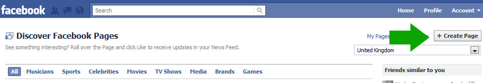
You will then be presented with a menu to choose the type of page that is most applicable for you. For the purposes of this demo I have selected "Company, Organization, or Institution" Fill in the form that is presented to you with you company name etc. and agree to the terms & conditions. Then click the button labelled "Get Started"
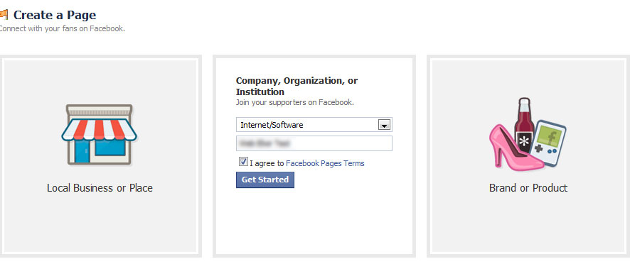
You should then be sent on to your new Page! Now lets create an app!
For now leave this browser window open as we will be returning to it!
Setting up a Facebook App
To create a facebook application you must first navigate to http://www.facebook.com/developers/. You will then be presented with the Facebook development blog (useful information about updates here) and a button that lets you set-up a new app. Click the Set Up New App button or the Create one link.
Please note at this point you may be asked to verify your Facebook account with either a mobile phone number or a credit/debit card. This is a requirement of setting up a facebook application.
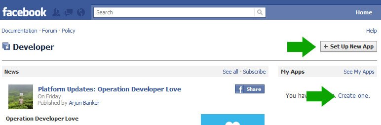You will then be presented with a form to choose a name for your application - choose something that represents what you want your application to do and relates to the tab name you wish to call it. After this you will be presented with a CAPTCHA form. Again fill this in and continue.
You will then be presented with a tabbed form that allows to enter a number of details about your application; You can edit the name, description and who to contact with regards to your app on the About tab.
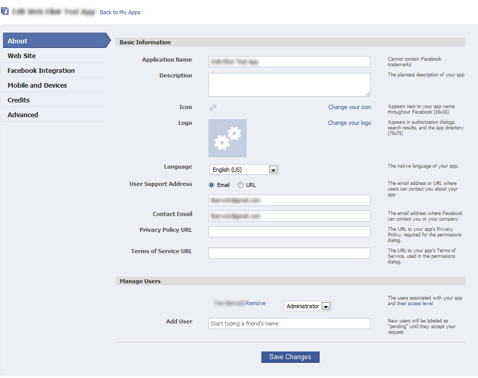
Next, select the Web Site tab and enter your site url - Remember the trailing slash (/). The domain is not required so it's up to you if you fill it in.
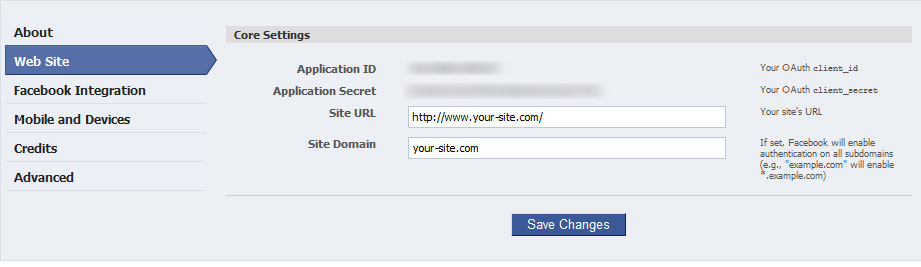
Now let's move on to the Facebook Integration Tab.
There are a number of fields here that require filling in. The Canvas Page needs a unique name specific to your app. This is the url that users would click to navigate to your application on Facebook. The Canvas URL should be a url on your website that will server the content when a user lands on you Canvas Page url. Again this must end with a trailing slash (/) or a question mark (?) . As such both the following are valid
- http://www.your-site.com/
- http://www.your-site.com/canvas.php?
Finally under the Page Tabs sub-heading . Set the Page Tab Type to Iframe, enter a Tab Name ( What will appear on the LHN of your Facebook Page)
Next set the Tab Url to the name of a file that resides on your server e.g index.php or tab.php. Then select Save Changes
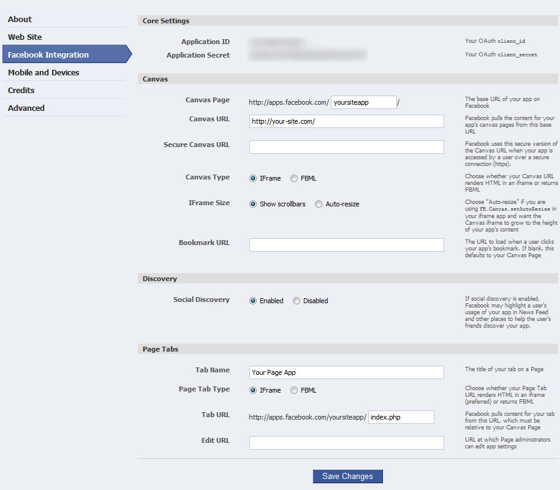
You will then be returned to the main application screen.
On this screen make a note of your App Id and App Secret. We will need these to set-up the Facebook Page Tab Class and for further integration with Facebook.
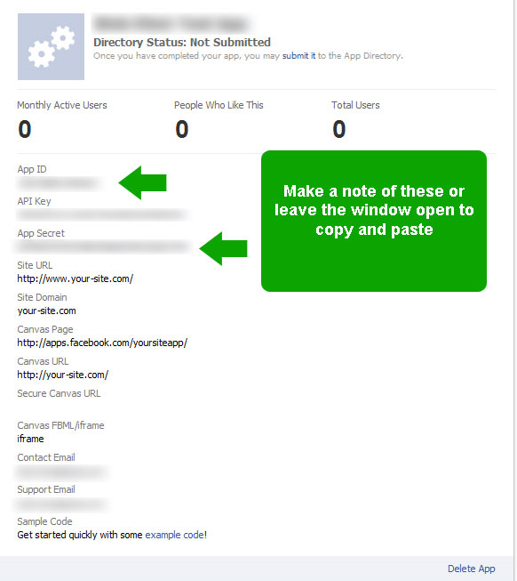
TopA Sample Application
Now let's get started creating a very simple application to use on our facebook page. This can be an extremely simple page that merely serves html content, but is must be named the same sa the Tab Url we set in the previous chapter. For our sample application, we're just going to present a simple message to users, it does not require them to have 'liked' our page or anything else. All users will see this message. Copy and paste the following code into your preferred editor and save the file with the same name you used in the Tab URL section of your Application settings. Alternatively use the file located in the simple folder of the download.
<!DOCTYPE html>
<html xmlns="http://www.w3.org/1999/xhtml">
<head>
<meta http-equiv="Content-Type" content="text/html; charset=utf-8" />
<title>Our sample application</title>
</head>
<body>
Hi and welcome to my page! This is a custom application
</body>
</html>
Upload this file to your webserver. Then navigate back to http://www.facebook.com/developers/ and click the more link that appears next to your application name. From the menu that appears select Application Profile Page. This will take you to the facebook page that is the "public profile" of your application. It is from this page that we will add your application to our facebook page; On the left hand-side you should see a link labelled Add to my Page. Click this link and you will be presented with a list of all the facebook page of which you are an admin. Select the page that you wish to add the application to.
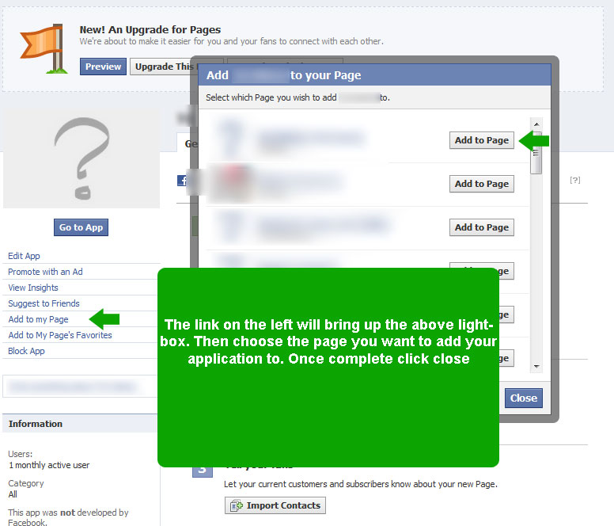
Once complete, navigate back to your newly created facebook page and you should see a new link on the left hand side with the name you entered in the Tab Name section when setting up your application. Clicking this tab should show the html we created earlier as in the following image
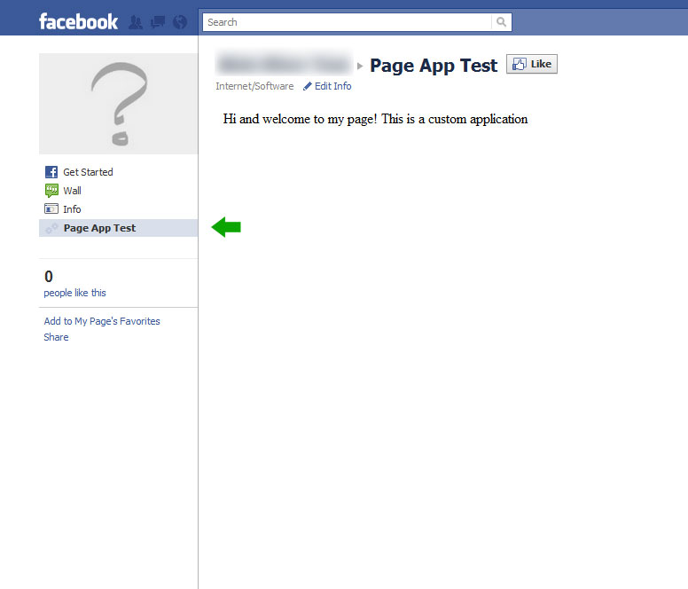
Congratulations, you've just created your Facebook Page Application. In the next section we will look at adding the Facebook Page App Class to display different content to users who like our page and those who don't!
TopUsing the Facebook Page App Class
For this section we will use the Facebook Page App class to tell if a user likes our page. If they do we will present them with some hidden content. If they don't we'll ask them to like our page! First things first we need to make sure that our page is a php page. Next we need to upload the "facebook_page_app.php" class to our web server. For the sake of this tutorial put it in the same folder as your php file that has your app content in. Next copy and past the following code to use as your application, replacing $APP_SECRET with your application secret, from your application profile page. Alternatively use the file in the medium folder of the download
<!DOCTYPE html>
<html xmlns="http://www.w3.org/1999/xhtml">
<head>
<meta http-equiv="Content-Type" content="text/html; charset=utf-8" />
<title>Our sample application</title>
</head>
<body>
<?php
$APP_SECRET = "xxxxxxxxxxxxxxxxxxxxxxxxxxxxxx"; // REPLACE ME WITH YOU APP SECRET
include_once("facebook_page_app.php");
$fpa = new Facebook_page_app($APP_SECRET);
?>
<p>Hi and welcome to my page! This is a custom application</p>
<?php
//Lets check if the user likes our page - to do this we just call the isUserFan() method of our Facebook_page_app object
if($fpa->isUserFan()){
echo "<p>Thanks very much for liking us on Facebook. As such let us present you with this exclusive voucher code for use on our website:<br />
code: VOUCHER123
</p>
<p>Once again many thanks -<br />Our Website Team</p> ";
}else{ // Doesn't look like they are a fan. Lets get them to sign up
echo "<p>It looks like you aren't a fan of ours! Click the "Like" link at the top of the page to get exclusive offers!</p>";
}
?>
</body>
</html>
All we are doing here is creating a new instance of the Facebook Page App Class and assigning it to the variable $fpa. We then use the method isUserFan() to see if a user likes our page or not. This method merely returns true or false. At this point, unless you've clicked like on your fan page you should see something similar to below. If you do like the page however, you should see the thank you message and voucher code! It's that simple!

The beauty of iFrame apps though, is that you can deeplink now to specific content using the app_data querystring. Before you had to use javascript to hide and display content in Facebook Page applications. The Facebook_App_Class helps you to do this by encoding and decoding your app_data parameters into an array you can use to test if a certain variable is set. An example of this can be seen below.
<!DOCTYPE html>
<html xmlns="http://www.w3.org/1999/xhtml">
<head>
<meta http-equiv="Content-Type" content="text/html; charset=utf-8" />
<title>Our sample application</title>
</head>
<body>
<?php
$APP_SECRET = "xxxxxxxxxxxxxxxxxxxxxxxxxxxxxxxxxxx";
include_once("facebook_page_app.php");
$fpa = new Facebook_page_app($APP_SECRET);
$page_url = "http://www.facebook.com/pages/Your-Page/YourPageId?sk=app_YourAppId"; // Replace this with the url of your page on facebook with your app selected
$app_data = $fpa->decodeAppData(); // This method looks for the presence of a submitted querystring
?>
<p>Hi and welcome to my page! This is a custom application</p>
<?php
//Lets check if the user likes our page - to do this we just call the isUserFan() method of our Facebook_page_app object
if($fpa->isUserFan()){
echo "<p>Thanks very much for liking us on Facebook. As such let us present you with this exclusive voucher code for use on our website:<br />
code: VOUCHER123
</p>
<p>Once again many thanks -<br />Our Website Team</p> ";
}else{ // Doesn't look like they are a fan. Lets get them to sign up
echo "<p>It looks like you aren't a fan of ours! Click the "Like" link at the top of the page to get exclusive offers!</p>";
}
// This next method create a link with a custom querystring for us to use. We can use querystring syntax or an array
// QueryString
echo "<p><a href=\"$page_url&app_data=". $fpa->encodeAppData("val=9&foo=bar")."\" target=\"_top\">test</a></p>";
// ARRAY
$params['val'] = 1;
$params['foo'] = 'bar';
echo "<p><a href=\"$page_url&app_data=". $fpa->encodeAppData($params)."\" target=\"_top\">test</a></p>";
if($app_data['foo'] === "bar"){
echo "<p>I only want to display this content if 'foo' is set to 'bar'</p>";
}
// Print out entire QS
print_r($app_data); // Display the querystring
?>
</body>
</html>
In this code I've added a few new lines. The $page_url variable is used to hold the full http:// address of our page on facebook. I use this variable purely to make creating links easier. The reason we have to do this, is because the app_data querystring only works when we set the target attribute of any links to _top. This means our links reload the entire page, not just our iFrame within Facebook.
After this I've created the $app_data variable. This variable is assigned the output of the decodeAppData() function that returns our querystring for us. We can then check for the reference of our querystring values using the format $app_data['foo'], where "foo" is the name of the variable we wish to check for.
Further down you can see I create 2 links. Both of them use the encodeAppData function. This is where we want to create a link to our page passing in custom data. The encodeAppData function can except a string in the format of a standard querystring in the format foo=bar&value_2=myVal or you can pass in an array of key value pairs as in the second example $params['foo'] = bar;. We use the page url in the href and append the app_data querystring with our encoded values. Again notice we set the target attribute to _top. We then use an if statement to check for the existance of the "foo" variable in our querystring. Just to round this off I have then printed the entire contents of our $app_data querystring.
If you click one of the links then hopefully now you should see a page similar to the following!
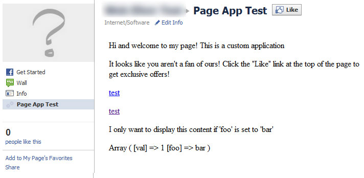
Please note that Facebook_Page_App does not sanitize any of your data when encoding and decoding your app_data querystring. You should make sure you do this yourself ,especially if using the values with a database
Finally, Facebook_Page_App also offers the method isUserAdmin() that will return true if the current user is an admin of the page in question. This method can be called as follows
<?php
if($fpa->isUserAdmin()){
echo "<p>This is extra content available to admins only</p>";
}
?>
Extended Permissions and the Open Graph
The final part of this help file deals with extending your application by using the open graph. I will only cover getting basic user permissions here and displaying a welcome message to a known user. There is a wealth of documentation located at http://developers.facebook.com and I would not be able to cover it all here. An example of a complete file can be found in the advanced folder of the download
The first thing we need to do is upload the facebook.php file that I've also included in the download to your web server in the same directory as your tab file. We then need to include this on our application page. We can do this via thew following line
<?php include("facebook.php"); ?>
Next we need to create an instance of the Facebook class using our App Id and App Secret. Again, add the following code underneath the include statement above. Replace the xxxxxxxxxxxx's with the values for your application. If you've already added the $APP_SECRET variable for use with the facebook_page_app class before this statement then there is no need to include it again.
<php
$APP_ID = "xxxxxxxxxxxxxxxxx";
$APP_SECRET = "xxxxxxxxxxxxxxxxxxxxxxx";
$facebook = new Facebook(array(
'appId' => $APP_ID,
'secret' => $APP_SECRET,
'cookie' => true,
'uploadSupport' =>true
));
?>
Finally we run a check to see if we know who the user is. We have access to this information if the user has authorised our application. If they haven't we'd best ask them too! This can be achieved with the following code:
<?php
$session = $facebook->getSession();
$access_token = $facebook->getAccessToken();
$me = null;
// Session based API call.
if ($session) {
try {
$uid = $facebook->getUser();
$me = $facebook->api('/me');
} catch (FacebookApiException $e) {
error_log($e);
}
}
if($me){ // This line checks if we know who they are!
echo "<p>Hi, ".$me['name'].", I know who you are!</p>" ;
}else{ //If they haven't we can redirect them to a page to authorize our application. We have to use a redirect_uri to send them to the url of our site.
echo "<p>Looks like you haven't authorized my app. <a href=\"https://www.facebook.com/dialog/oauth?client_id=".$APP_ID."&redirect_uri=http://your-site.com/\" target=\"_top\">Authorize it here!</a></p>";
}
?>
Depending on whether or not you've authorised your application you should see something similar to below
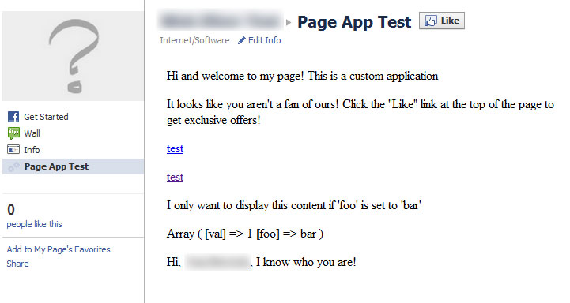
And that's it!. There is of course a lot more uses once we know who a user is, but as I say it is slightly out of scope for this tutorial. I'm happy to try and answer questions about the open graph where possible, but it is not the focus of this app. This is primarily to help make creating content for your pages easier. Again feel free to contact me using the details at the top of this document for any other support queries!
Top